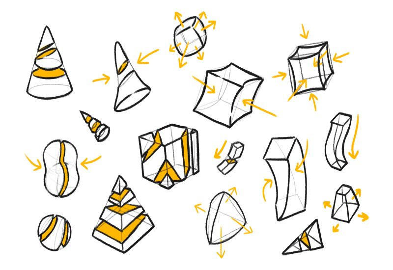
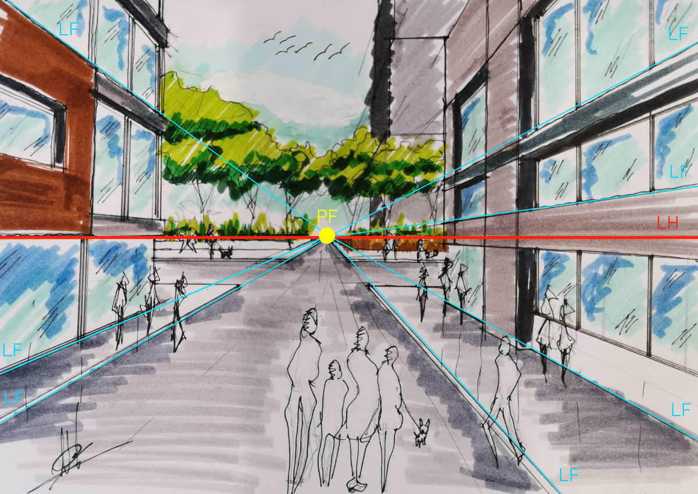

TÉCNICAS DE DIBUJO
¿Qué es el dibujo artístico?
Es quizá el estilo favorito de muchos, este busca crear obras de arte con fines estéticos o comunicativos. Se puede usar casi cualquier técnica o material, como lápiz, carboncillo, acuarela, bolígrafos, pasteles e incluso sangría.
Pero conocer los tipos de dibujo solo es el principio, si quieres disfrutar de esta disciplina te invitamos a conocer y experimentar con las diferentes técnicas de dibujo artístico.
¿Qué son las técnicas del dibujo artístico?
Básicamente, las técnicas del dibujo artístico son los diferentes métodos que se usan para crear imágenes con lápices, carboncillos, plumas, pinceles u otros instrumentos.
Algunas de las técnicas más comunes son el sombreado, el trazo, el difuminado, el esfumado y el degradado. Estas técnicas permiten crear efectos de luz, sombra, volumen y textura en las obras de arte a través de diferentes materiales.
¿Qué es el dibujo a lápiz?
El dibujo a lápiz es una forma de expresión artística que utiliza un instrumento de grafito para crear imágenes sobre un papel u otra superficie.
El dibujo a lápiz es una de las técnicas más populares y sencillas para aprender a dibujar. Se puede utilizar para diferentes fines, como hacer bocetos, ilustraciones, retratos, caricaturas o paisajes.
El dibujo a lápiz tiene varias ventajas, como su facilidad de uso, su bajo costo y su variedad de tonos y efectos que se pueden lograr con diferentes grados de dureza y presión del lápiz.
Un aspecto muy importante en el dibujo a lápiz es aprender a diferenciar y utilizar los diferentes tipos de lápices para dibujo.

La forma
Es todo elemento que tiene un contorno (límites de la figura) y una estructura o armazón. En el dibujo, es importante aprender a identificar las formas básicas que hay detrás de los objetos (cubo, cilindro, esfera, etc.).

La perspectiva
Consiste en dibujar figuras y cosas conservando la relación de las distancias que existe entre ellas.

La composición
Es la forma en que el artista dispone los elementos que componen un dibujo.
La luz
Se refiere a las sombras y los matices del dibujo. Existen dos valores opuestos (blanco y negro) a partir de los cuales surgen todos los demás (grises).